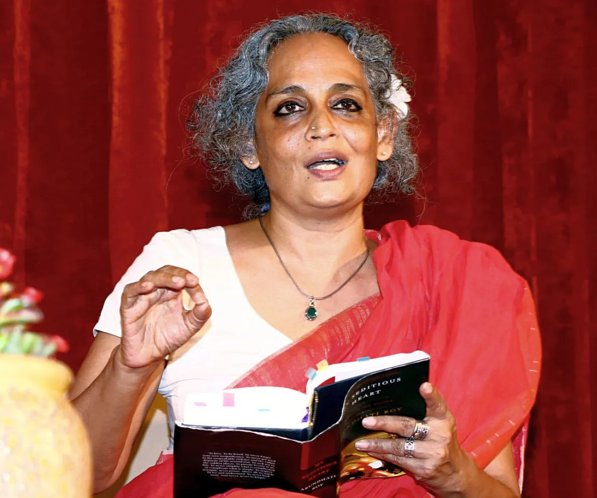

Sudha Murthy is one of India's most beloved authors, known for her simple yet powerful storytelling. As the
chairperson of the
Infosys Foundation, she has played a significant role in philanthropy, particularly in the fields of
education, healthcare, and
rural development. Her writing reflects her real-life experiences and the values she believes in, such as
compassion, honesty, and humility.
Her popular books like "Wise and Otherwise," "How I Taught My Grandmother to Read," and "Grandma's Bag of
Stories" resonate with readers of all ages,
often delivering important life lessons through engaging narratives.
Ruskin Bond
Ruskin Bond, an Anglo-Indian writer who has lived in the hills of Mussoorie for most of his life,
is known for his charming tales about nature, childhood, and small-town India. With a career spanning
over seven decades, Bond has written numerous novels, short stories, and poems. His works such as
"The Blue Umbrella," "Rusty the Boy from the Hills," and "The Room on the Roof" have become classics in Indian
literature.
His nostalgic and lyrical style makes his stories relatable, especially to young readers and those who enjoy
the beauty of everyday life.
R.K. Narayan
R.K. Narayan was one of the earliest Indian writers in English to gain international fame. He is best known
for creating
the fictional town of Malgudi, where many of his stories take place. His books, including "Malgudi Days,"
"Swami and Friends,"
and "The Guide," portray the simplicity and complexity of Indian life with gentle humor and philosophical
insight.
Narayan's ability to reflect the hopes, struggles, and humanity of ordinary people made him a pioneer of
Indian English literature
and earned him worldwide respect.
Chetan Bhagat
Chetan Bhagat is a contemporary author who revolutionized reading among Indian youth. A former investment
banker,
Bhagat writes modern, fast-paced novels that often reflect the challenges faced by young Indians in areas like
education,
career, and love. His books, such as "Five Point Someone," "2 States," and "The Girl in Room 105," are written
in a casual,
accessible style and have been adapted into successful Bollywood films. While his literary merit is debated,
there's no
denying his influence in making reading a popular habit among the younger generation.

Arundhati Roy
Arundhati Roy is an acclaimed author and activist who won the Booker Prize for her debut novel "The God of
Small Things,"
a richly layered story that explores caste, love, and loss in a Kerala family. Her writing is deeply poetic,
political,
and complex, often tackling themes of inequality, social injustice, and resistance. Her second novel, "The
Ministry of
Utmost Happiness," continues this tradition by focusing on marginalized communities in India. Beyond
literature, Roy is
also known for her fearless activism and essays on human rights and environmental issues.